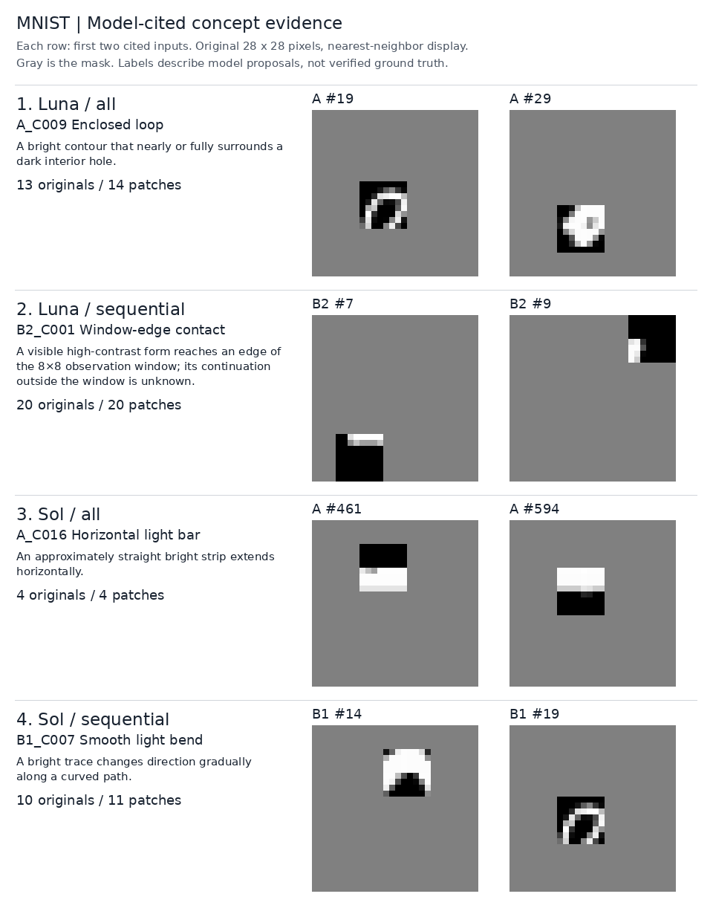
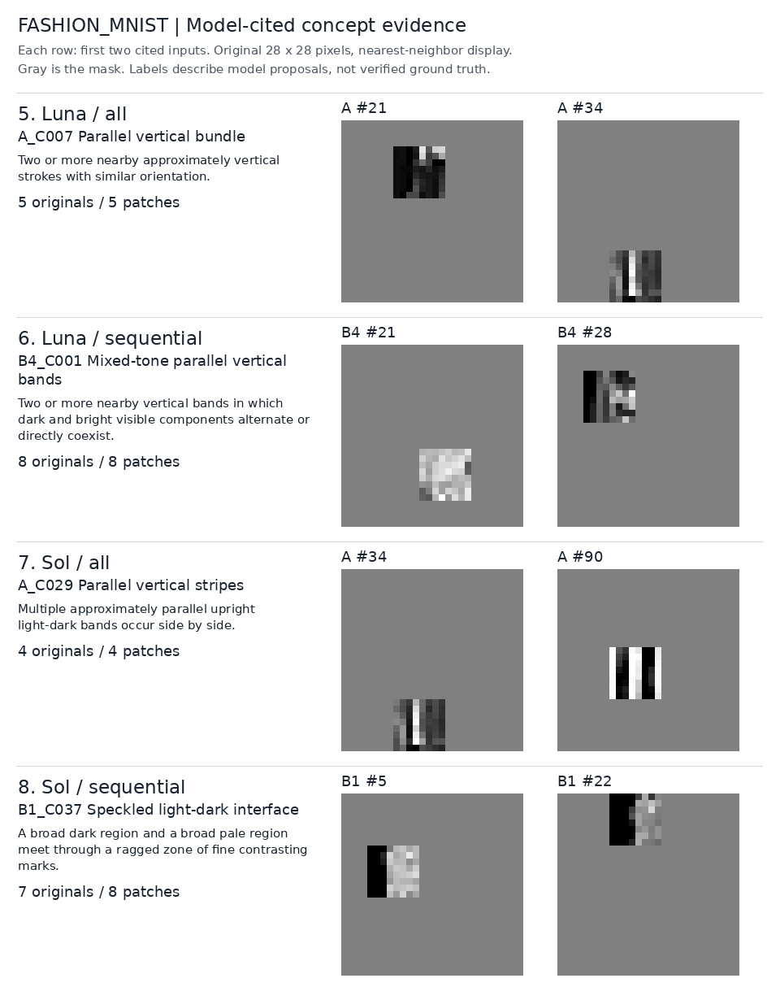
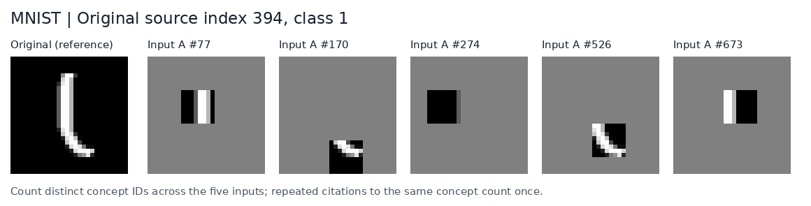
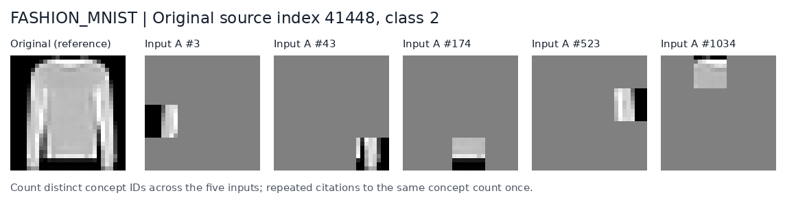

PAP · 2026-10-23 실험 / 2026-10-25 집계
어떤 concept이 어떤 관찰에 연결됐나
MNIST·Fashion-MNIST에서 Luna 5.6/high와 Sol 6.1/high가 제안한 concept, 실제 입력 근거, 이미지별 연결 수를 모았습니다. 8개 조건의 concept 373개와 명시적인 근거 연결 1,591개입니다.
숫자는 모델이 발견 근거로 인용한 연결 수입니다. 전체 patch에 feature의 유무를 labeling한 결과나 detection accuracy가 아닙니다. 원본은 dataset마다 210장, 원본당 관찰 5개로 총 1,050개 patch입니다.
한 번 조건은 1,050개를 함께 입력했습니다. 순차 조건은 210개씩 5회 입력하면서 이전 concept을 전달했습니다. 이 페이지의 distribution에는 연결이 1개 이상인 경우를 표시했습니다.
MNIST의 실제 근거

| 번호 | 조건 | Concept | 모델 정의의 풀이 | 원본 수 | Patch 수 |
|---|---|---|---|---|---|
| 1 | MNIST · Luna · 한 번 | Enclosed loop | 밝은 윤곽이 어두운 내부를 거의 또는 완전히 감싼 모양 | 13 | 14 |
| 2 | MNIST · Luna · 순차 | Window-edge contact | 형태가 관찰 window의 끝에 닿은 경우. 밖에서 계속되는지는 알 수 없음 | 20 | 20 |
| 3 | MNIST · Sol · 한 번 | Horizontal light bar | 밝은 띠가 대체로 곧게 가로로 뻗은 모양 | 4 | 4 |
| 4 | MNIST · Sol · 순차 | Smooth light bend | 밝은 선이 곡선을 따라 서서히 방향을 바꾸는 모양 | 10 | 11 |
Fashion-MNIST의 실제 근거

| 번호 | 조건 | Concept | 모델 정의의 풀이 | 원본 수 | Patch 수 |
|---|---|---|---|---|---|
| 5 | Fashion-MNIST · Luna · 한 번 | Parallel vertical bundle | 비슷한 방향으로 나란히 놓인 두 개 이상의 세로선 | 5 | 5 |
| 6 | Fashion-MNIST · Luna · 순차 | Mixed-tone parallel vertical bands | 밝고 어두운 세로 띠가 번갈아 있거나 함께 놓인 모양 | 8 | 8 |
| 7 | Fashion-MNIST · Sol · 한 번 | Parallel vertical stripes | 밝고 어두운 세로 띠가 나란히 반복되는 모양 | 4 | 4 |
| 8 | Fashion-MNIST · Sol · 순차 | Speckled light-dark interface | 어두운 영역과 밝은 영역이 작은 반점들로 거칠어진 경계에서 만나는 모양 | 7 | 8 |
그림 1의 A #19와 그림 4의 B1 #19는 같은 입력입니다. Luna는 Enclosed loop, Sol은 Smooth light bend의 근거로 연결했습니다. 그림 5와 7의 A #34도 같은 입력입니다. 이 연결을 정답으로 확정한 것은 아닙니다.
Sol의 Horizontal light bar는 Uniform bright area + Straight segment + Horizontal orientation을 참조합니다. Parallel vertical stripes는 Narrow band + Vertical orientation + Local repetition + Abrupt tonal boundary를 참조합니다.
Luna의 모든 observation 필드와 Sol의 MNIST 한 번 조건에는 patch별 설명 대신 파일명이 남아 있습니다. 여기서는 정의와 실제 인용 입력을 보여 주며, 모델이 남기지 않은 관찰 설명을 보충하지 않았습니다.
원본 하나에 연결된 concept
같은 원본의 관찰 다섯 개에서 인용된 concept ID를 중복 없이 셉니다. 아래는 네 조건 모두에 연결이 있는 원본 중 Sol 순차의 concept 수가 가장 큰 예시이며, 평균적인 원본을 대표하지 않습니다.

| 조건 | Concept 수 | 연결된 concept |
|---|---|---|
| Luna · 한 번 | 2 | Vertical stroke; Angular turn |
| Sol · 한 번 | 3 | Uniform dark area; Separated light runs; Paired vertical light rails |
| Luna · 순차 | 1 | Compact filled island |
| Sol · 순차 | 6 | Upright light stroke; Dark separating channel; Light mark on dark ground; Paired upright rails; Oblique branch on an upright light stem; Approximately constant stroke width |

| 조건 | Concept 수 | 연결된 concept |
|---|---|---|
| Luna · 한 번 | 1 | Vertical stroke |
| Sol · 한 번 | 1 | Dark-left vertical division |
| Luna · 순차 | 1 | Right-angle corner |
| Sol · 순차 | 6 | Horizontal direction; Straight boundary; Horizontal light-dark division; Dark-left pale-right split; Pale-above dark-below split; Leaning dark vertical strip |
Concept 수는 서로 독립적인 정답 feature 수가 아닙니다. 같은 모양을 여러 관점에서 설명하거나, 실제 모양과 맞는지 검토가 필요한 연결이 포함됩니다.
원본 이미지별 distribution
표 안의 값은 원본 이미지 장수입니다. 각 행의 합은 concept이 하나 이상 연결된 원본 수입니다.
| 조건 | 1개 | 2개 | 3개 | 4개 | 5개 | 6개 | 7개 | 연결된 원본 / 210 |
|---|---|---|---|---|---|---|---|---|
| MNIST · Luna · 한 번 | 66 | 29 | 4 | 0 | 0 | 0 | 0 | 99 |
| MNIST · Sol · 한 번 | 41 | 32 | 19 | 6 | 0 | 1 | 0 | 99 |
| MNIST · Luna · 순차 | 66 | 28 | 12 | 1 | 0 | 0 | 0 | 107 |
| MNIST · Sol · 순차 | 71 | 45 | 20 | 5 | 2 | 2 | 1 | 146 |
| Fashion-MNIST · Luna · 한 번 | 55 | 6 | 1 | 0 | 0 | 0 | 0 | 62 |
| Fashion-MNIST · Sol · 한 번 | 41 | 14 | 14 | 8 | 5 | 3 | 1 | 86 |
| Fashion-MNIST · Luna · 순차 | 82 | 58 | 15 | 3 | 0 | 0 | 0 | 158 |
| Fashion-MNIST · Sol · 순차 | 44 | 29 | 20 | 14 | 6 | 1 | 1 | 115 |
Patch별 distribution
표 안의 값은 입력 patch 수입니다. 원본 이미지 장수와 구분해서 읽어야 합니다.
| 조건 | 1개 | 2개 | 3개 | 4개 | 5개 | 6개 | 연결된 patch / 1,050 |
|---|---|---|---|---|---|---|---|
| MNIST · Luna · 한 번 | 128 | 8 | 0 | 0 | 0 | 0 | 136 |
| MNIST · Sol · 한 번 | 85 | 35 | 12 | 1 | 0 | 0 | 133 |
| MNIST · Luna · 순차 | 116 | 23 | 1 | 0 | 0 | 0 | 140 |
| MNIST · Sol · 순차 | 163 | 44 | 6 | 2 | 0 | 0 | 215 |
| Fashion-MNIST · Luna · 한 번 | 69 | 2 | 0 | 0 | 0 | 0 | 71 |
| Fashion-MNIST · Sol · 한 번 | 68 | 28 | 18 | 2 | 3 | 1 | 120 |
| Fashion-MNIST · Luna · 순차 | 243 | 10 | 0 | 0 | 0 | 0 | 253 |
| Fashion-MNIST · Sol · 순차 | 94 | 49 | 15 | 5 | 2 | 0 | 165 |
전체 373개 concept의 연결 수
조건별로 펼쳐 볼 수 있습니다. 같은 이름을 catalog 사이에서 합치지 않았으며, composition의 구성 concept에 label을 자동 전파하지 않았습니다. 근거 번호 B2#7은 두 번째 순차 호출의 7번 입력을 뜻합니다.
MNIST · Luna · 한 번 · 14개
| ID | Concept | 원문 정의 | 원본 수 | Patch 수 | 근거 번호 |
|---|---|---|---|---|---|
| A_C010 | Branch or cross junction | Three or more stroke directions meet in one compact location. | 15 | 16 | A#42, A#116, A#160, A#178, A#180, A#201, A#257, A#339, A#376, A#520, A#583, A#624, A#637, A#833, A#901, A#1003 |
| A_C006 | Dark filled block | A broad nearly uniform dark region occupying most or all of the visible window. | 14 | 14 | A#91, A#194, A#264, A#312, A#343, A#393, A#432, A#494, A#549, A#627, A#725, A#840, A#890, A#1014 |
| A_C009 | Enclosed loop | A bright contour that nearly or fully surrounds a dark interior hole. | 13 | 14 | A#19, A#29, A#63, A#93, A#119, A#184, A#246, A#261, A#398, A#565, A#608, A#768, A#896, A#968 |
| A_C003 | Horizontal stroke | A predominantly horizontal narrow bright run. | 12 | 14 | A#20, A#54, A#101, A#203, A#245, A#279, A#401, A#460, A#547, A#638, A#711, A#805, A#881, A#951 |
| A_C004 | Rising diagonal stroke | A narrow stroke oriented from lower-left toward upper-right. | 10 | 10 | A#9, A#18, A#27, A#39, A#68, A#85, A#103, A#118, A#156, A#194 |
| A_C005 | Falling diagonal stroke | A narrow stroke oriented from upper-left toward lower-right. | 10 | 10 | A#24, A#32, A#57, A#83, A#104, A#130, A#159, A#211, A#234, A#250 |
| A_C008 | Open curved arc | A curved bright stroke with visible open space on at least one side and no complete enclosure. | 10 | 10 | A#14, A#30, A#35, A#50, A#55, A#66, A#79, A#89, A#120, A#142 |
| A_C012 | Window-edge truncation | A stroke or filled region reaches a boundary of the visible 8x8 window, so its continuation is hidden. | 10 | 10 | A#20, A#53, A#80, A#81, A#117, A#121, A#127, A#139, A#153, A#174 |
| A_C011 | Stroke endpoint | A tapered or abruptly terminating bright stroke with surrounding background on its terminal side. | 9 | 10 | A#1, A#3, A#12, A#37, A#48, A#61, A#88, A#128, A#148, A#187 |
| A_C007 | Angular turn | Two straight stroke segments meeting at a corner or L-like bend. | 8 | 10 | A#2, A#10, A#31, A#52, A#74, A#96, A#117, A#138, A#170, A#232 |
| A_C002 | Vertical stroke | A predominantly vertical narrow bright run. | 8 | 9 | A#6, A#47, A#77, A#166, A#270, A#397, A#575, A#769, A#986 |
| A_C014 | Loop-with-stem composite | An enclosed or nearly enclosed curved form attached to a short external stroke. | 7 | 7 | A#93, A#142, A#157, A#329, A#485, A#706, A#999 |
| A_C013 | Cornered bar composite | A connected shape combining an axis-aligned stroke with an angular turn. | 6 | 6 | A#5, A#53, A#81, A#133, A#174, A#244 |
| A_C001 | Compact bright spot | A small isolated bright component within the visible window. | 4 | 4 | A#588, A#669, A#742, A#937 |
MNIST · Sol · 한 번 · 50개
| ID | Concept | 원문 정의 | 원본 수 | Patch 수 | 근거 번호 |
|---|---|---|---|---|---|
| A_C018 | Rising diagonal light bar | An approximately straight bright strip runs from lower left to upper right. | 6 | 6 | A#9, A#68, A#168, A#581, A#641, A#858 |
| A_C019 | Falling diagonal light bar | An approximately straight bright strip runs from upper left to lower right. | 6 | 6 | A#83, A#94, A#250, A#406, A#584, A#765 |
| A_C022 | Right-opening light arc | A light curve wraps around the left side of a dark interior, with upper and lower ends opening toward the right. | 6 | 6 | A#184, A#405, A#510, A#751, A#782, A#933 |
| A_C001 | Uniform dark area | A contiguous near-black area with little resolved internal variation. | 5 | 5 | A#139, A#274, A#343, A#828, A#1050 |
| A_C006 | Rising diagonal orientation | A feature follows a lower-left to upper-right direction in the displayed image. | 5 | 5 | A#9, A#68, A#168, A#581, A#858 |
| A_C007 | Falling diagonal orientation | A feature follows an upper-left to lower-right direction in the displayed image. | 5 | 5 | A#83, A#94, A#250, A#584, A#765 |
| A_C008 | Smooth curvature | A visible stroke or contrast boundary changes direction progressively around a rounded bend. | 5 | 5 | A#30, A#55, A#184, A#510, A#782 |
| A_C009 | Angular bend | Two visible stroke segments meet with a concentrated change of direction at a corner or pointed vertex. | 5 | 5 | A#10, A#40, A#130, A#601, A#1041 |
| A_C021 | Downward-opening light arch | A light curve passes above a dark interior and descends on both sides, leaving an opening below. | 5 | 5 | A#14, A#61, A#254, A#808, A#1006 |
| A_C023 | Left-opening light arc | A light curve wraps around the right side of a dark interior, with upper and lower ends opening toward the left. | 5 | 5 | A#79, A#163, A#278, A#800, A#1027 |
| A_C024 | Left-pointing light chevron | Two diagonal light arms meet at a leftmost vertex and spread toward the upper right and lower right. | 5 | 5 | A#10, A#70, A#164, A#737, A#1041 |
| A_C044 | Upright with a lower hook | An upright or steeply leaning light stem curves sideways near its lower end into a shorter return. | 5 | 5 | A#21, A#95, A#301, A#698, A#969 |
| A_C002 | Uniform bright area | A contiguous near-white area with little resolved internal variation, forming part of a stroke or a larger filled shape. | 4 | 4 | A#336, A#511, A#588, A#670 |
| A_C003 | Straight segment | A visible stroke segment or contrast boundary that maintains an approximately constant direction. | 4 | 4 | A#9, A#47, A#83, A#461 |
| A_C004 | Horizontal orientation | A feature extends predominantly from left to right. | 4 | 4 | A#279, A#461, A#594, A#805 |
| A_C005 | Vertical orientation | A feature extends predominantly from top to bottom. | 4 | 4 | A#6, A#47, A#270, A#943 |
| A_C010 | Taper | A visible light region becomes progressively narrower toward one end. | 4 | 4 | A#103, A#114, A#208, A#942 |
| A_C011 | Enclosed dark pocket | A small dark region appears surrounded by brighter pixels within the visible evidence. | 4 | 4 | A#64, A#425, A#486, A#968 |
| A_C012 | Separated light runs | Two light runs have a visible dark gap between them over part of their lengths; they may connect elsewhere. | 4 | 4 | A#77, A#270, A#279, A#708 |
| A_C013 | Three-arm junction | Three distinguishable light arms meet at a common visible junction. | 4 | 4 | A#222, A#763, A#769, A#834 |
| A_C015 | Tiny light fleck | A compact light mark occupies only a small portion of an otherwise dark local area. | 4 | 4 | A#22, A#58, A#107, A#907 |
| A_C016 | Horizontal light bar | An approximately straight bright strip extends horizontally. | 4 | 4 | A#461, A#594, A#639, A#805 |
| A_C017 | Vertical light bar | An approximately straight bright strip extends vertically. | 4 | 4 | A#6, A#47, A#287, A#943 |
| A_C020 | Upward-opening light cup | A light curve passes beneath a dark interior and rises on both sides, leaving an opening above. | 4 | 4 | A#30, A#55, A#590, A#721 |
| A_C026 | Upward-pointing light apex | Two diagonal light arms meet above the space between them and extend downward to opposite sides. | 4 | 4 | A#116, A#176, A#625, A#659 |
| A_C032 | Light ring | A rounded light band visibly surrounds a dark interior pocket. | 4 | 4 | A#29, A#64, A#425, A#968 |
| A_C035 | Paired vertical light rails | Two roughly parallel vertical light strips have a dark channel between them over part of their heights. | 4 | 4 | A#77, A#270, A#708, A#995 |
| A_C045 | Upright with an upper hook | An upright or steeply leaning light stem curves sideways near its upper end into a shorter return. | 4 | 4 | A#4, A#374, A#427, A#827 |
| A_C047 | Oblique light wedge | A bright region broadens away from a narrow end and has a prominent rising diagonal boundary. | 4 | 4 | A#103, A#114, A#208, A#942 |
| A_C048 | Bright upper cap over a dark block | A broad horizontal bright strip lies immediately above a comparatively solid dark area. | 4 | 4 | A#140, A#171, A#354, A#762 |
| A_C049 | Bright lower strip beneath a dark block | A broad horizontal bright strip lies immediately below a comparatively solid dark area. | 4 | 4 | A#461, A#594, A#639, A#805 |
| A_C050 | Compact filled bright lobe | A compact bright area has a rounded outer boundary against adjacent dark pixels and no resolved dark interior pocket. | 4 | 4 | A#336, A#408, A#426, A#511 |
| A_C037 | Paired rising light rails | Two light runs follow similar rising diagonal directions with a narrow dark strip between them. | 3 | 4 | A#112, A#348, A#462, A#994 |
| A_C014 | Four-arm junction | Four visible light arms meet where two stroke paths cross. | 3 | 3 | A#178, A#201, A#583 |
| A_C025 | Right-pointing light chevron | Two diagonal light arms meet at a rightmost vertex and spread toward the upper left and lower left. | 3 | 3 | A#130, A#601, A#977 |
| A_C027 | Downward-pointing light convergence | Two oblique light arms approach from the upper left and upper right and meet below the space between them. | 3 | 3 | A#222, A#613, A#834 |
| A_C028 | Lower-left light elbow | An upright light segment turns right at its lower end, producing a corner with dark space above and to the right. | 3 | 3 | A#40, A#651, A#868 |
| A_C029 | Upper-left light elbow | An upright light segment turns right at its upper end, producing a corner with dark space below and to the right. | 3 | 3 | A#35, A#41, A#814 |
| A_C030 | Upper-right light elbow | A horizontal light segment turns downward at its right end, producing a corner with dark space below and to the left. | 3 | 3 | A#485, A#544, A#1021 |
| A_C033 | Oblique oval light ring | A light ring has an elongated interior and outline aligned from lower left to upper right. | 3 | 3 | A#64, A#425, A#807 |
| A_C034 | Dark pinhole in a bright area | A very small dark pocket is enclosed by a substantially broader bright area. | 3 | 3 | A#235, A#486, A#968 |
| A_C036 | Paired horizontal light rails | Two roughly parallel horizontal light runs have a dark channel between them over part of their widths. | 3 | 3 | A#279, A#418, A#547 |
| A_C040 | Downward-stemmed light fork | Two upper light arms converge into a junction from which a third light arm extends downward. | 3 | 3 | A#222, A#763, A#834 |
| A_C041 | Light bridge between uprights | Two vertical light rails are joined by a transverse light segment, with visible rail portions above and below the connection. | 3 | 3 | A#520, A#769, A#901 |
| A_C042 | Upper bridge with two descending posts | Two separated light uprights descend from a shared light bridge across their upper ends. | 3 | 3 | A#126, A#237, A#970 |
| A_C043 | Light zigzag with horizontal ends | A light path contains upper and lower approximately horizontal runs connected by an oblique middle run, producing two turns. | 3 | 3 | A#42, A#257, A#740 |
| A_C039 | Crossbar through an upright | A roughly horizontal light crossbar intersects an upright or slightly leaning light stroke. | 2 | 3 | A#201, A#440, A#548 |
| A_C031 | Lower-right light elbow | A right-side upright light segment turns left along its lower end, producing a corner with dark space above and to the left. | 2 | 2 | A#392, A#591 |
| A_C038 | Diagonal light crossing | Rising and falling light strokes intersect, leaving four oblique arms around their junction. | 2 | 2 | A#178, A#583 |
| A_C046 | Light loop with an attached extension | An apparent light loop around a dark pocket has an additional light segment projecting beyond its rounded outline. | 1 | 2 | A#707, A#897 |
MNIST · Luna · 순차 · 31개
| ID | Concept | 원문 정의 | 원본 수 | Patch 수 | 근거 번호 |
|---|---|---|---|---|---|
| B2_C001 | Window-edge contact | A visible high-contrast form reaches an edge of the 8×8 observation window; its continuation outside the window is unknown. | 20 | 20 | B2#7, B2#9, B2#20, B2#33, B2#37, B2#46, B2#58, B2#61, B2#80, B2#83, B2#97, B2#110, B2#118, B2#127, B2#140, B2#153, B2#170, B2#180, B2#187, B2#197 |
| B2_C002 | Boundary-truncated stroke | A horizontal, vertical, or diagonal stroke reaches the visible-window boundary, so no visible endpoint is present on that side. | 19 | 19 | B2#7, B2#13, B2#20, B2#33, B2#37, B2#46, B2#58, B2#61, B2#80, B2#97, B2#110, B2#118, B2#127, B2#140, B2#153, B2#170, B2#187, B2#197, B2#210 |
| B3_C003 | Edge-notched filled mass | A compact filled region has a visible rectangular or angular bite, indentation, or step along one edge; it is not a uniformly filled block. | 12 | 13 | B3#29, B3#30, B3#48, B3#53, B3#63, B3#67, B3#84, B3#102, B3#116, B3#121, B3#129, B3#173, B3#207 |
| B2_C004 | Three-way fork | Three visible arms meet at one junction, with one branch dividing into two directions. | 9 | 10 | B2#12, B2#23, B2#27, B2#39, B2#47, B2#48, B2#49, B2#131, B2#134, B2#167 |
| B2_C006 | Compact filled island | A small, localized filled dark component occupies only part of the visible window, distinct from a nearly uniform full-window dark block. | 9 | 9 | B2#32, B2#54, B2#64, B2#65, B2#66, B2#102, B2#109, B2#133, B2#183 |
| B3_C002 | Orthogonal stair-step contour | A contour approximating a diagonal through two or more alternating horizontal and vertical steps, rather than one straight diagonal or one isolated corner. | 9 | 9 | B3#15, B3#34, B3#81, B3#104, B3#128, B3#135, B3#159, B3#170, B3#185 |
| B2_C007 | Open U-bend | A rounded open contour has two visible sides connected by a curved base, leaving a clear gap at the opposite side. | 8 | 8 | B2#3, B2#11, B2#50, B2#55, B2#68, B2#75, B2#89, B2#95 |
| B3_C004 | Visibly closed compact contour | A small contour visibly closes around an interior region, with no discernible opening in the observed 8×8 window. | 8 | 8 | B3#5, B3#35, B3#44, B3#54, B3#80, B3#115, B3#146, B3#188 |
| B4_C001 | Axis-aligned compact block | A localized filled rectangular component with mostly horizontal and vertical outer edges, no visible internal cavity, and a footprint larger than a one-pixel mark. | 8 | 8 | B4#40, B4#73, B4#95, B4#108, B4#132, B4#137, B4#153, B4#170 |
| B5_C002 | Diagonal-sided filled wedge | A compact filled region with a visibly substantial interior and one prominent straight diagonal boundary; it is broader than a one-pixel diagonal stroke. | 8 | 8 | B5#25, B5#54, B5#79, B5#101, B5#129, B5#152, B5#172, B5#203 |
| B2_C003 | Parallel paired strokes | Two distinct high-contrast runs occupy the window with approximately parallel orientation and visible separation. | 7 | 8 | B2#16, B2#48, B2#60, B2#69, B2#70, B2#117, B2#138, B2#187 |
| B4_C003 | Hollow compact ring | A compact contour that visibly surrounds a contrasting bright interior region, forming a ring-like or closed hollow component. | 7 | 7 | B4#46, B4#66, B4#96, B4#126, B4#146, B4#174, B4#196 |
| B5_C003 | Oblique-to-orthogonal junction | A visible junction in which a diagonal or oblique arm meets an approximately horizontal or vertical segment, with the junction behaving as a branch or interior attachment rather than a simple diagonal stroke. | 7 | 7 | B5#47, B5#72, B5#107, B5#140, B5#158, B5#180, B5#201 |
| B3_C005 | Bright enclosed cavity | A compact light region is visibly surrounded or nearly surrounded by darker high-contrast pixels, forming a small interior cavity or hole. | 4 | 4 | B3#66, B3#115, B3#146, B3#188 |
| B5_C001 | Filled L-shaped mass | A connected, substantially filled component with two thick approximately orthogonal arms and a visible concave inner corner, rather than merely two thin strokes meeting. | 4 | 4 | B5#31, B5#69, B5#123, B5#186 |
| B2_C005 | Diagonal X-crossing | Two oblique runs visibly cross through one another, producing an X-like intersection rather than merely sharing an endpoint. | 3 | 3 | B2#47, B2#130, B2#167 |
| B3_C006 | Compact bright island | A small localized bright filled component occupies part of the visible window, distinct from a dark filled island or a full-window uniform block. | 3 | 3 | B3#10, B3#66, B3#168 |
| B4_C004 | Punctured filled island | A compact filled component containing a distinct contrasting interior spot or cavity, while retaining substantial filled material around it. | 3 | 3 | B4#49, B4#112, B4#160 |
| B3_C001 | Four-way orthogonal cross | A horizontal and vertical run cross through their interiors, producing four visible cardinal arms rather than a T-junction or endpoint corner. | 2 | 2 | B3#20, B3#100 |
| B1_C001 | Horizontal stroke | A visible 8×8 patch containing a predominantly horizontal high-contrast run. Evidence: B1 patches 5 (observation_000004.png), 11 (observation_000010.png), 25 (observation_000024.png), 31 (observation_000030.png), 43 (observation_000042.png), 49 (observation_000048.png), 54 (observation_000053.png), 62 (observation_000061.png), 71 (observation_000070.png), 80 (observation_000079.png), 87 (observation_000086.png), 96 (observation_000095.png), 101 (observation_000100.png), 117 (observation_000116.png), 121 (observation_000120.png), 128 (observation_000127.png), 133 (observation_000132.png), 138 (observation_000137.png), 140 (observation_000139.png), 153 (observation_000152.png), 169 (observation_000168.png), 171 (observation_000170.png), 174 (observation_000173.png), 186 (observation_000185.png), 190 (observation_000189.png), 203 (observation_000202.png). | 1 | 1 | B1#5 |
| B1_C002 | Vertical stroke | A visible 8×8 patch containing a predominantly vertical high-contrast run. Evidence: B1 patches 4 (observation_000003.png), 6 (observation_000005.png), 18 (observation_000017.png), 22 (observation_000021.png), 33 (observation_000032.png), 47 (observation_000046.png), 58 (observation_000057.png), 73 (observation_000072.png), 77 (observation_000076.png), 92 (observation_000091.png), 106 (observation_000105.png), 119 (observation_000118.png), 127 (observation_000126.png), 143 (observation_000142.png), 146 (observation_000145.png), 149 (observation_000148.png), 150 (observation_000149.png), 197 (observation_000196.png), 205 (observation_000204.png), 210 (observation_000209.png). | 1 | 1 | B1#4 |
| B1_C003 | Diagonal stroke | A visible 8×8 patch containing a predominantly diagonal high-contrast run. Evidence: B1 patches 9 (observation_000008.png), 13 (observation_000012.png), 21 (observation_000020.png), 27 (observation_000026.png), 36 (observation_000035.png), 44 (observation_000043.png), 45 (observation_000044.png), 56 (observation_000055.png), 57 (observation_000056.png), 60 (observation_000059.png), 65 (observation_000064.png), 68 (observation_000067.png), 72 (observation_000071.png), 78 (observation_000077.png), 85 (observation_000084.png), 94 (observation_000093.png), 95 (observation_000094.png), 99 (observation_000098.png), 103 (observation_000102.png), 104 (observation_000103.png), 111 (observation_000110.png), 115 (observation_000114.png), 118 (observation_000117.png), 122 (observation_000121.png), 129 (observation_000128.png), 136 (observation_000135.png), 145 (observation_000144.png), 147 (observation_000146.png), 152 (observation_000151.png), 156 (observation_000155.png), 157 (observation_000156.png), 161 (observation_000160.png), 165 (observation_000164.png), 167 (observation_000166.png), 168 (observation_000167.png), 177 (observation_000176.png), 179 (observation_000178.png), 192 (observation_000191.png), 195 (observation_000194.png), 198 (observation_000197.png), 199 (observation_000198.png), 207 (observation_000206.png). | 1 | 1 | B1#9 |
| B1_C004 | Open curved hook | A visible curved arc or hook that does not visibly close into a loop. Evidence: B1 patches 7 (observation_000006.png), 10 (observation_000009.png), 12 (observation_000011.png), 14 (observation_000013.png), 16 (observation_000015.png), 17 (observation_000016.png), 28 (observation_000027.png), 30 (observation_000029.png), 35 (observation_000034.png), 38 (observation_000037.png), 40 (observation_000039.png), 41 (observation_000040.png), 46 (observation_000045.png), 50 (observation_000049.png), 55 (observation_000054.png), 59 (observation_000058.png), 63 (observation_000062.png), 66 (observation_000065.png), 67 (observation_000066.png), 70 (observation_000069.png), 75 (observation_000074.png), 79 (observation_000078.png), 86 (observation_000085.png), 89 (observation_000088.png), 90 (observation_000089.png), 102 (observation_000101.png), 109 (observation_000108.png), 113 (observation_000112.png), 120 (observation_000119.png), 126 (observation_000125.png), 132 (observation_000131.png), 142 (observation_000141.png), 144 (observation_000143.png), 148 (observation_000147.png), 151 (observation_000150.png), 162 (observation_000161.png), 163 (observation_000162.png), 164 (observation_000163.png), 176 (observation_000175.png), 184 (observation_000183.png), 209 (observation_000208.png). | 1 | 1 | B1#7 |
| B1_C005 | Near-closed loop | A compact rounded or angular contour that visibly encloses, or nearly encloses, a small interior region. Evidence: B1 patches 19 (observation_000018.png), 23 (observation_000022.png), 29 (observation_000028.png), 42 (observation_000041.png), 64 (observation_000063.png), 82 (observation_000081.png), 93 (observation_000092.png), 116 (observation_000115.png), 158 (observation_000157.png), 178 (observation_000177.png), 180 (observation_000179.png), 201 (observation_000200.png). | 1 | 1 | B1#19 |
| B1_C006 | Orthogonal corner | Two approximately perpendicular stroke segments meeting at a visible corner. Evidence: B1 patches 24 (observation_000023.png), 32 (observation_000031.png), 37 (observation_000036.png), 52 (observation_000051.png), 69 (observation_000068.png), 74 (observation_000073.png), 84 (observation_000083.png), 88 (observation_000087.png), 97 (observation_000096.png), 98 (observation_000097.png), 107 (observation_000106.png), 110 (observation_000109.png), 114 (observation_000113.png), 123 (observation_000122.png), 134 (observation_000133.png), 141 (observation_000140.png), 155 (observation_000154.png), 159 (observation_000158.png), 166 (observation_000165.png), 172 (observation_000171.png), 175 (observation_000174.png), 181 (observation_000180.png), 183 (observation_000182.png), 187 (observation_000186.png), 188 (observation_000187.png), 191 (observation_000190.png), 196 (observation_000195.png), 200 (observation_000199.png), 204 (observation_000203.png), 208 (observation_000207.png). | 1 | 1 | B1#24 |
| B1_C007 | Diagonal corner or chevron | A diagonal stroke meets a second stroke, producing an angled corner or open chevron. Evidence: B1 patches 15 (observation_000014.png), 34 (observation_000033.png), 48 (observation_000047.png), 83 (observation_000082.png), 100 (observation_000099.png), 105 (observation_000104.png), 112 (observation_000111.png), 135 (observation_000134.png), 170 (observation_000169.png), 185 (observation_000184.png). | 1 | 1 | B1#15 |
| B1_C008 | Orthogonal junction | A visible T-like or multi-arm junction formed from horizontal and vertical runs. Evidence: B1 patches 8 (observation_000007.png), 20 (observation_000019.png), 53 (observation_000052.png), 61 (observation_000060.png), 81 (observation_000080.png), 117 (observation_000116.png), 133 (observation_000132.png), 141 (observation_000140.png), 171 (observation_000170.png), 174 (observation_000173.png). | 1 | 1 | B1#20 |
| B1_C009 | Crossed or branched diagonal junction | Two or more diagonal or oblique segments meet or cross within the visible window. Evidence: B1 patches 42 (observation_000041.png), 93 (observation_000092.png), 112 (observation_000111.png), 116 (observation_000115.png), 135 (observation_000134.png), 160 (observation_000159.png), 178 (observation_000177.png), 180 (observation_000179.png), 201 (observation_000200.png). | 1 | 1 | B1#160 |
| B1_C010 | Uniform dark block | The visible 8×8 region is dominated by a nearly uniform dark square or block, with no clear internal stroke structure. Evidence: B1 patches 91 (observation_000090.png), 139 (observation_000138.png), 194 (observation_000193.png). | 1 | 1 | B1#91 |
| B1_C011 | Loop with attached stroke | A near-closed contour is visibly connected to, or interrupted by, a straight stem or branch. Evidence: B1 patches 29 (observation_000028.png), 48 (observation_000047.png), 93 (observation_000092.png), 100 (observation_000099.png), 116 (observation_000115.png), 153 (observation_000152.png), 160 (observation_000159.png), 180 (observation_000179.png), 201 (observation_000200.png). | 1 | 1 | B1#48 |
| B4_C002 | Isolated compact spot | A very small, approximately rounded or point-like filled component without an attached directional extension. | 1 | 1 | B4#198 |
MNIST · Sol · 순차 · 85개
| ID | Concept | 원문 정의 | 원본 수 | Patch 수 | 근거 번호 |
|---|---|---|---|---|---|
| B1_C005 | Rising light diagonal | A bright elongated trace runs from lower left toward upper right. | 15 | 15 | B1#9, B1#13, B1#18, B1#27, B1#36, B1#44, B1#65, B1#68, B1#72, B1#118, B1#156, B1#168, B1#179, B1#195, B1#198 |
| B1_C007 | Smooth light bend | A bright trace changes direction gradually along a curved path. | 10 | 11 | B1#14, B1#19, B1#28, B1#30, B1#38, B1#50, B1#55, B1#61, B1#120, B1#148, B1#184 |
| B1_C006 | Falling light diagonal | A bright elongated trace runs from upper left toward lower right. | 10 | 10 | B1#24, B1#80, B1#83, B1#87, B1#94, B1#125, B1#127, B1#159, B1#200, B1#209 |
| B1_C041 | Compact bright fleck | A small, compact bright mark appears against dark pixels, without a long bright continuation visible. | 7 | 7 | B1#37, B1#58, B1#73, B1#107, B1#134, B1#149, B1#186 |
| B1_C008 | Angular light bend | Two bright segments meet with an abrupt change of direction. | 6 | 6 | B1#10, B1#70, B1#76, B1#78, B1#116, B1#130 |
| B3_C003 | Steep rising light trace | A rising bright trace extends farther vertically than horizontally over its visible oblique course. | 6 | 6 | B3#13, B3#15, B3#54, B3#101, B3#151, B3#195 |
| B1_C003 | Upright light stroke | An elongated bright trace runs approximately vertically. | 5 | 5 | B1#26, B1#33, B1#47, B1#77, B1#150 |
| B1_C009 | Changing stroke width | A bright mark visibly widens or narrows along its length. | 5 | 5 | B1#103, B1#114, B1#129, B1#167, B1#208 |
| B1_C019 | Left-open rounded hook | A light curve wraps around the right side of a dark recess, leaving it open toward the left. | 5 | 5 | B1#28, B1#38, B1#63, B1#79, B1#163 |
| B1_C030 | Rising stroke with upper cap | A rising light diagonal joins a short lateral light segment near its upper end. | 5 | 5 | B1#16, B1#60, B1#100, B1#153, B1#193 |
| B1_C036 | Broad rising light wedge | A rising oblique bright mark broadens into a filled wedge rather than remaining a narrow line. | 5 | 5 | B1#103, B1#114, B1#129, B1#167, B1#208 |
| B2_C001 | Slender falling light slash | A falling bright diagonal remains narrow relative to its visible length. | 5 | 5 | B2#24, B2#40, B2#103, B2#196, B2#200 |
| B4_C002 | Slender lateral light trace | An approximately horizontal light trace has little visible thickness relative to its lateral length. | 5 | 5 | B4#48, B4#76, B4#81, B4#113, B4#143 |
| B1_C004 | Lateral light stroke | An elongated bright trace runs approximately horizontally, allowing a slight slope or bow. | 4 | 5 | B1#49, B1#54, B1#131, B1#171, B1#203 |
| B1_C018 | Right-open rounded hook | A light curve wraps around the left side of a dark recess, leaving it open toward the right. | 4 | 5 | B1#35, B1#41, B1#50, B1#102, B1#184 |
| B1_C001 | Dark region | A contiguous region of very low grayscale intensity. | 4 | 4 | B1#62, B1#91, B1#139, B1#194 |
| B1_C002 | Bright region | A connected group of high-intensity pixels forming a visible light mark. | 4 | 4 | B1#9, B1#30, B1#103, B1#171 |
| B1_C010 | Dark separating channel | A narrow dark interval separates nearby bright traces over a visible span; global disconnection is not required. | 4 | 4 | B1#33, B1#77, B1#112, B1#150 |
| B1_C012 | Intermediate-tone fringe | A narrow band of intermediate grayscale values softens the boundary between a bright trace and a dark region. | 4 | 4 | B1#19, B1#59, B1#152, B1#210 |
| B1_C013 | Featureless dark field | The observed dark area contains no visible bright internal mark. | 4 | 4 | B1#62, B1#91, B1#139, B1#194 |
| B1_C014 | Light mark on dark ground | A bright mark is locally contrasted against an adjacent or surrounding dark area. | 4 | 4 | B1#9, B1#30, B1#77, B1#178 |
| B1_C016 | Upward-open rounded bowl | A light curve passes beneath a dark recess and turns upward on its sides. | 4 | 4 | B1#30, B1#55, B1#120, B1#123 |
| B1_C031 | Lower-left light elbow | An upright light segment turns rightward along a lower lateral segment. | 4 | 4 | B1#40, B1#109, B1#132, B1#183 |
| B1_C034 | Top-hooked light stem | A roughly upright light stem bends laterally at its upper visible portion. | 4 | 4 | B1#1, B1#4, B1#92, B1#210 |
| B1_C037 | Slender rising light slash | A rising bright trace remains narrow relative to its visible length. | 4 | 4 | B1#18, B1#104, B1#111, B1#192 |
| B2_C006 | Upper-right light elbow | An upright light segment descends from the right end of an upper lateral light segment. | 4 | 4 | B2#16, B2#22, B2#166, B2#175 |
| B3_C001 | Compact filled light patch | A bright region has substantial extent in both dimensions and appears as a compact filled area rather than an elongated stroke. | 4 | 4 | B3#10, B3#91, B3#162, B3#168 |
| B3_C002 | Shallow rising light trace | A rising bright trace extends farther horizontally than vertically over its visible oblique course. | 4 | 4 | B3#21, B3#89, B3#104, B3#139 |
| B3_C005 | Steep falling light trace | A falling bright trace extends farther vertically than horizontally over its visible oblique course. | 4 | 4 | B3#51, B3#114, B3#134, B3#203 |
| B4_C003 | Broad lateral light band | A laterally elongated bright mark has appreciable thickness across multiple visible pixel rows. | 4 | 4 | B4#9, B4#71, B4#175, B4#203 |
| B1_C029 | Rising stroke with lower foot | A rising light diagonal joins a short lateral light segment at its lower end. | 3 | 4 | B1#51, B1#78, B1#99, B1#145 |
| B1_C015 | Paired upright rails | Two approximately parallel upright light traces have a dark channel between them. | 3 | 3 | B1#33, B1#77, B1#150 |
| B1_C017 | Downward-open rounded arch | A light curve passes above a dark recess and turns downward on its sides. | 3 | 3 | B1#14, B1#61, B1#148 |
| B1_C021 | Left-pointing light chevron | Two oblique light arms meet at a leftward point and spread apart toward the right. | 3 | 3 | B1#10, B1#70, B1#164 |
| B1_C023 | Pointed light arch | A rising left arm and falling right arm meet at an upper point, with dark space below. | 3 | 3 | B1#116, B1#162, B1#176 |
| B1_C032 | Upper-left light elbow | An upright light segment joins a lateral segment extending rightward from its upper end. | 3 | 3 | B1#35, B1#41, B1#102 |
| B1_C039 | Crossbar on an oblique light stem | A short lateral bright segment intersects an oblique light stem, producing a junction with at least three arms. | 3 | 3 | B1#93, B1#180, B1#201 |
| B2_C002 | Broad falling light wedge | A falling oblique bright mark has a broad filled portion that narrows along its visible course. | 3 | 3 | B2#50, B2#113, B2#121 |
| B2_C003 | Slender upright light trace | An approximately vertical bright trace has very little visible thickness relative to its length. | 3 | 3 | B2#46, B2#70, B2#71 |
| B2_C004 | Broad upright light stripe | A vertically elongated bright region has substantial visible thickness across its width. | 3 | 3 | B2#77, B2#80, B2#140 |
| B2_C005 | Visible light terminal against dark pixels | A light trace ends with visible dark pixels beyond its tip, rather than disappearing directly into the gray mask. | 3 | 3 | B2#61, B2#88, B2#119 |
| B2_C008 | Four-arm light junction | Four distinguishable bright arms extend from one local junction, regardless of their orientation. | 3 | 3 | B2#27, B2#47, B2#167 |
| B3_C004 | Shallow falling light trace | A falling bright trace extends farther horizontally than vertically over its visible oblique course. | 3 | 3 | B3#64, B3#70, B3#110 |
| B3_C006 | Locally disconnected light marks | At least two distinguishable light marks have a dark gap between them and no visible light connection within the window. | 3 | 3 | B3#21, B3#55, B3#89 |
| B3_C010 | Falling stroke with upper cap | A falling light diagonal joins a short lateral light segment near its upper end. | 3 | 3 | B3#22, B3#28, B3#169 |
| B4_C001 | Approximately constant stroke width | A light stroke maintains approximately the same thickness along its visible length. | 3 | 3 | B4#43, B4#78, B4#186 |
| B5_C001 | Subdued gray mark | An intermediate-gray mark contrasts with adjacent near-black pixels without a clearly bright core. | 3 | 3 | B5#3, B5#101, B5#193 |
| B5_C003 | Flat-ended light terminal | A light trace ends in an approximately straight face across its width, with visible dark pixels beyond that face. | 3 | 3 | B5#67, B5#196, B5#199 |
| B1_C043 | Light lower band beneath dark area | A lateral bright band lies beneath a visibly dark upper area. | 2 | 3 | B1#54, B1#131, B1#203 |
| B2_C015 | Falling stroke with lower foot | A falling light diagonal joins a short lateral light segment near its lower end. | 2 | 3 | B2#74, B2#203, B2#209 |
| B1_C011 | Enclosed dark pocket | A small dark interior is surrounded by a light contour within the visible evidence. | 2 | 2 | B1#29, B1#64 |
| B1_C020 | Small tilted light loop | A compact light contour encloses a dark pocket and has an oblique, roughly oval outline. | 2 | 2 | B1#29, B1#64 |
| B1_C022 | Right-pointing light chevron | Two oblique light arms meet at a rightward point and spread apart toward the left. | 2 | 2 | B1#76, B1#130 |
| B1_C024 | Crossing light diagonals | Rising and falling bright traces intersect, producing four oblique arms. | 2 | 2 | B1#160, B1#178 |
| B1_C025 | Light cap with two descending legs | A short lateral bright cap connects two approximately upright light legs beneath it. | 2 | 2 | B1#126, B1#206 |
| B1_C026 | Barred pointed arch | A pointed light arch includes a short lateral bridge between its sloping sides. | 2 | 2 | B1#48, B1#162 |
| B1_C028 | Stacked lateral light traces | Two roughly lateral light traces lie one above the other with a dark interval between them. | 2 | 2 | B1#144, B1#189 |
| B1_C033 | Lower-right light elbow | An upright light segment joins a lower lateral segment extending leftward. | 2 | 2 | B1#137, B1#143 |
| B1_C040 | Oblique branch on an upright light stem | A falling light arm joins the side of an upright light stem, making a three-arm fork. | 2 | 2 | B1#101, B1#170 |
| B1_C042 | Broad light cap above dark area | A broad, approximately horizontal bright region lies directly above a dark region. | 2 | 2 | B1#140, B1#171 |
| B2_C007 | Three-arm light junction | Three distinguishable bright arms meet at one local junction. | 2 | 2 | B2#12, B2#17 |
| B2_C009 | Pointed upward-open light bowl | Two oblique light arms meet at a lower point and spread upward, leaving dark space above the vertex. | 2 | 2 | B2#12, B2#92 |
| B2_C010 | Downward-stemmed light fork | Two upper oblique light arms merge into one approximately upright descending stem. | 2 | 2 | B2#12, B2#17 |
| B2_C012 | Upright light cross | An upright light trace and a lateral light trace intersect, with both traces extending beyond the intersection. | 2 | 2 | B2#27, B2#167 |
| B2_C014 | Paired falling light traces | Two nearby falling bright traces follow approximately parallel courses with a dark interval between them. | 2 | 2 | B2#100, B2#210 |
| B3_C007 | Squared upward-open light bracket | Two approximately upright light arms are joined by a lower lateral light portion through corner-like turns, leaving an upward opening. | 2 | 2 | B3#170, B3#196 |
| B3_C009 | Tilted light loop with rising extension | A compact tilted light loop has a visible light extension projecting toward the upper right beyond its enclosed portion. | 2 | 2 | B3#2, B3#138 |
| B4_C006 | Axial light T-junction | Approximately upright and lateral light segments meet to form three distinguishable arms. | 2 | 2 | B4#136, B4#145 |
| B4_C009 | Right-open light hook with inward bar | A rounded right-open light hook has a short lateral return projecting inward from its lower-right portion. | 2 | 2 | B4#34, B4#138 |
| B5_C002 | Rising subdued gray trace | An elongated intermediate-gray mark follows a lower-left to upper-right course against darker pixels. | 2 | 2 | B5#101, B5#154 |
| B1_C035 | Bottom-hooked light stem | A roughly upright light stem bends laterally at its lower visible portion. | 1 | 2 | B1#46, B1#143 |
| B1_C027 | Z-like light zigzag | Upper and lower lateral light traces are connected by an oblique return. | 1 | 1 | B1#42 |
| B1_C038 | Paired rising light traces | Two nearby rising bright traces run approximately parallel with a dark interval between them. | 1 | 1 | B1#112 |
| B2_C011 | Right-opening double branch on a light stem | An upright light stem meets two oblique arms that spread toward the upper right and lower right. | 1 | 1 | B2#122 |
| B2_C013 | Squared right-open light bracket | Upper and lower lateral light arms are joined on the left by an upright light portion, leaving a rightward opening. | 1 | 1 | B2#73 |
| B2_C016 | S-like light double bend | A connected light trace makes two successive bends in opposite turning directions. | 1 | 1 | B2#202 |
| B3_C008 | Approximately round light loop | A closed light contour surrounds a dark pocket with a roughly round outline and no strong oblique elongation. | 1 | 1 | B3#146 |
| B4_C004 | Featureless bright field | The observed bright area contains no discernible dark internal mark. | 1 | 1 | B4#40 |
| B4_C005 | Enclosed bright island | A compact bright mark is completely surrounded by visible dark pixels. | 1 | 1 | B4#115 |
| B4_C007 | Bridged upright light rails | Two roughly upright light traces are connected by a lateral light bridge across their intervening dark interval. | 1 | 1 | B4#139 |
| B4_C008 | Light loop with upright upper extension | A closed light contour around a dark pocket joins an approximately upright light extension projecting above the enclosure. | 1 | 1 | B4#160 |
| B4_C010 | Upward-stemmed light fork | An approximately upright upper light stem joins two oblique light arms spreading toward the lower left and lower right. | 1 | 1 | B4#29 |
| B5_C004 | Squared left-open light bracket | Upper and lower lateral light arms join an approximately upright right side through corner-like turns, leaving an opening toward the left. | 1 | 1 | B5#140 |
| B5_C005 | Notched filled light patch | A compact filled bright region has a localized dark indentation entering from one side, with bright material remaining beside the indentation. | 1 | 1 | B5#19 |
| B5_C006 | Light loop with lower-left extension | A closed light contour around a dark pocket joins a light segment projecting below the enclosure toward the left. | 1 | 1 | B5#203 |
Fashion-MNIST · Luna · 한 번 · 15개
| ID | Concept | 원문 정의 | 원본 수 | Patch 수 | 근거 번호 |
|---|---|---|---|---|---|
| A_C001 | Horizontal stroke | A locally elongated mark whose dominant extent is horizontal. | 5 | 5 | A#2, A#38, A#53, A#84, A#108 |
| A_C002 | Vertical stroke | A locally elongated mark whose dominant extent is vertical. | 5 | 5 | A#3, A#9, A#25, A#52, A#99 |
| A_C003 | Diagonal stroke | An elongated mark with a clear diagonal orientation. | 5 | 5 | A#4, A#10, A#23, A#47, A#60 |
| A_C004 | Compact dark block | A small, spatially concentrated region substantially darker than its local surroundings. | 5 | 5 | A#45, A#64, A#91, A#120, A#179 |
| A_C005 | Compact bright block | A small, spatially concentrated region substantially brighter than its local surroundings. | 5 | 5 | A#6, A#13, A#40, A#63, A#86 |
| A_C007 | Parallel vertical bundle | Two or more nearby approximately vertical strokes with similar orientation. | 5 | 5 | A#21, A#34, A#81, A#121, A#157 |
| A_C008 | Curved arc | A bent stroke whose local path changes direction smoothly rather than at a sharp corner. | 5 | 5 | A#19, A#31, A#35, A#93, A#113 |
| A_C009 | Stepped corner | A localized change in direction forming an angular turn or staircase-like transition. | 5 | 5 | A#8, A#26, A#104, A#114, A#123 |
| A_C013 | Closed loop | A locally enclosing contour with a visible interior region or closure. | 5 | 5 | A#18, A#77, A#127, A#145, A#254 |
| A_C014 | Alternating checker texture | A compact patch containing several small alternating light and dark cells or short fragments. | 5 | 5 | A#162, A#238, A#272, A#527, A#651 |
| A_C015 | Broad filled region | A visibly extended area of relatively uniform gray intensity occupying much of the visible window. | 5 | 5 | A#16, A#24, A#44, A#55, A#96 |
| A_C006 | Parallel horizontal bundle | Two or more nearby approximately horizontal strokes with similar orientation. | 4 | 5 | A#2, A#42, A#92, A#122, A#258 |
| A_C011 | Stroke intersection | A local configuration in which two differently oriented stroke components meet or overlap. | 4 | 4 | A#11, A#73, A#176, A#208 |
| A_C012 | Hook | A stroke configuration combining a stem with a short curved or sharply turning terminal. | 4 | 4 | A#31, A#54, A#184, A#221 |
| A_C010 | Zigzag trace | A connected or nearly connected trace containing successive diagonal direction changes. | 3 | 5 | A#70, A#94, A#244, A#605, A#704 |
Fashion-MNIST · Sol · 한 번 · 53개
| ID | Concept | 원문 정의 | 원본 수 | Patch 수 | 근거 번호 |
|---|---|---|---|---|---|
| A_C051 | Nearly uniform dark field | The visible fragment is dominated by dark pixels with little internal variation. | 6 | 6 | A#45, A#212, A#505, A#747, A#989, A#1039 |
| A_C049 | Bright rim around a dark pocket | A compact dark region is bordered on several visible sides by a curved bright rim. | 5 | 5 | A#127, A#148, A#254, A#402, A#870 |
| A_C005 | Vertical orientation | A local edge or elongated mark runs predominantly from top to bottom. | 4 | 5 | A#90, A#287, A#497, A#918, A#964 |
| A_C030 | Parallel horizontal stripes | Multiple approximately parallel horizontal light-dark bands occur above one another. | 4 | 5 | A#2, A#42, A#258, A#561, A#571 |
| A_C001 | Very dark region | A region containing black or nearly black pixels, regardless of its shape. | 4 | 4 | A#45, A#271, A#505, A#989 |
| A_C002 | Bright region | A region containing white or nearly white pixels, regardless of its shape. | 4 | 4 | A#13, A#86, A#247, A#789 |
| A_C003 | Soft tonal transition | Intermediate gray values soften the transition between lighter and darker pixels. | 4 | 4 | A#9, A#202, A#730, A#1049 |
| A_C004 | Abrupt tonal boundary | Adjacent light and dark regions meet with a relatively sharp change in intensity. | 4 | 4 | A#25, A#68, A#105, A#626 |
| A_C006 | Horizontal orientation | A local edge or elongated mark runs predominantly from left to right. | 4 | 4 | A#2, A#42, A#258, A#571 |
| A_C007 | Rising diagonal orientation | An edge or mark runs from lower left toward upper right, like a slash. | 4 | 4 | A#68, A#101, A#353, A#771 |
| A_C009 | Curvature | A visible contour or band changes direction gradually along its extent. | 4 | 4 | A#93, A#250, A#427, A#750 |
| A_C011 | Narrow band | An elongated region has a small width relative to its visible length. | 4 | 4 | A#34, A#90, A#188, A#398 |
| A_C012 | Local repetition | Two or more similar elements recur within one visible fragment. | 4 | 4 | A#42, A#90, A#188, A#238 |
| A_C013 | Irregular fine texture | Small intensity variations form a locally uneven, granular pattern. | 4 | 4 | A#5, A#56, A#78, A#338 |
| A_C014 | Angular bend | A contour or band changes direction at a visibly sharp turn. | 4 | 4 | A#94, A#314, A#433, A#1017 |
| A_C016 | Tonal uniformity | A visible area has little internal intensity variation. | 4 | 4 | A#45, A#247, A#747, A#789 |
| A_C017 | Bright-left vertical division | A predominantly vertical boundary separates bright material on the left from dark material on the right. | 4 | 4 | A#12, A#105, A#329, A#1031 |
| A_C018 | Dark-left vertical division | A predominantly vertical boundary separates dark material on the left from bright material on the right. | 4 | 4 | A#3, A#41, A#626, A#952 |
| A_C021 | Rising diagonal contrast boundary | Bright and dark regions meet along a boundary running from lower left toward upper right. | 4 | 4 | A#23, A#101, A#353, A#653 |
| A_C023 | Bright vertical band | A thin upright bright strip appears within a darker local pattern. | 4 | 4 | A#34, A#81, A#157, A#918 |
| A_C024 | Dark vertical band | A thin upright dark strip appears within a lighter local pattern. | 4 | 4 | A#90, A#287, A#548, A#964 |
| A_C027 | Bright rising diagonal band | A narrow bright slash runs through darker material. | 4 | 4 | A#68, A#547, A#717, A#771 |
| A_C029 | Parallel vertical stripes | Multiple approximately parallel upright light-dark bands occur side by side. | 4 | 4 | A#34, A#90, A#287, A#964 |
| A_C032 | Faint fine striations | Repeated thin bands differ mainly through modest gray-level changes. | 4 | 4 | A#121, A#398, A#571, A#798 |
| A_C033 | High-contrast mottling | An irregular mixture of small bright and dark elements produces a granular local field. | 4 | 4 | A#5, A#56, A#78, A#338 |
| A_C034 | Two-dimensional grid texture | Small contrasting elements recur in both image directions, producing a grid or checker-like pattern. | 4 | 4 | A#162, A#238, A#527, A#628 |
| A_C035 | Bright flecks in dark material | Small localized bright marks are separated by darker pixels. | 4 | 4 | A#5, A#78, A#165, A#549 |
| A_C037 | Bright wedge | A filled bright portion narrows toward a corner or point along a sloping dark boundary. | 4 | 4 | A#101, A#353, A#643, A#653 |
| A_C038 | Dark wedge | A filled dark portion narrows toward a corner or point along a sloping bright boundary. | 4 | 4 | A#23, A#277, A#296, A#353 |
| A_C040 | Rounded dark lobe | A relatively broad dark region has a visibly convex curved boundary. | 4 | 4 | A#160, A#161, A#179, A#750 |
| A_C041 | Curved bright band | A narrow bright strip bends along a curved path beside darker pixels. | 4 | 4 | A#93, A#113, A#418, A#870 |
| A_C042 | Curved dark band | A narrow dark strip bends along a curved path beside lighter pixels. | 4 | 4 | A#113, A#254, A#418, A#870 |
| A_C043 | Repeated curved bands | Multiple nearby light-dark bands bend in similar directions. | 4 | 4 | A#449, A#515, A#693, A#963 |
| A_C052 | Nearly uniform bright field | The visible fragment is dominated by bright pixels with little internal variation. | 4 | 4 | A#86, A#144, A#247, A#789 |
| A_C053 | Stair-step contrast boundary | A light-dark boundary advances through a sequence of short horizontal and vertical segments. | 4 | 4 | A#83, A#107, A#175, A#385 |
| A_C008 | Falling diagonal orientation | An edge or mark runs from upper left toward lower right, like a backslash. | 3 | 4 | A#87, A#188, A#454, A#655 |
| A_C022 | Falling diagonal contrast boundary | Bright and dark regions meet along a boundary running from upper left toward lower right. | 3 | 4 | A#87, A#188, A#454, A#900 |
| A_C028 | Bright falling diagonal band | A narrow bright backslash runs through darker material. | 3 | 4 | A#188, A#349, A#454, A#655 |
| A_C031 | Parallel diagonal hatching | Two or more narrow oblique bands repeat with similar slopes. | 3 | 4 | A#70, A#188, A#349, A#812 |
| A_C039 | Rounded bright lobe | A relatively broad bright region has a visibly convex curved boundary. | 3 | 4 | A#112, A#250, A#427, A#1029 |
| A_C047 | Repeated chevrons | Similar angular up-down bends recur within the same small pattern. | 3 | 4 | A#18, A#94, A#244, A#888 |
| A_C048 | Bright arch over a dark recess | A bright upper bend joins side portions around a visibly darker region below it. | 3 | 4 | A#173, A#209, A#711, A#774 |
| A_C010 | Taper | A visible region or band progressively narrows along one direction. | 3 | 3 | A#101, A#353, A#653 |
| A_C015 | Compact mark | A small localized light or dark element has comparable extent in both image directions. | 3 | 3 | A#162, A#238, A#628 |
| A_C019 | Bright-above horizontal division | A predominantly horizontal boundary separates bright material above from dark material below. | 3 | 3 | A#67, A#214, A#622 |
| A_C020 | Dark-above horizontal division | A predominantly horizontal boundary separates dark material above from bright material below. | 3 | 3 | A#359, A#603, A#649 |
| A_C036 | Dark flecks in bright material | Small localized dark marks are separated by lighter pixels. | 3 | 3 | A#56, A#162, A#238 |
| A_C044 | Orthogonal corner | A visible upright segment meets a horizontal segment in an approximately right-angled turn. | 3 | 3 | A#219, A#713, A#1017 |
| A_C045 | Bright chevron | Two bright oblique segments meet at an angular apex within darker material. | 3 | 3 | A#314, A#433, A#605 |
| A_C025 | Bright horizontal band | A thin left-to-right bright strip appears within a darker local pattern. | 2 | 4 | A#2, A#42, A#92, A#565 |
| A_C026 | Dark horizontal band | A thin left-to-right dark strip appears within a lighter local pattern. | 2 | 3 | A#42, A#92, A#258 |
| A_C046 | Dark chevron | Two dark oblique segments meet at an angular apex within lighter material. | 2 | 3 | A#94, A#244, A#888 |
| A_C050 | Uprights joined by inward diagonals | Two bright upright portions are linked by oblique portions that descend toward an interior valley. | 2 | 3 | A#182, A#300, A#757 |
Fashion-MNIST · Luna · 순차 · 41개
| ID | Concept | 원문 정의 | 원본 수 | Patch 수 | 근거 번호 |
|---|---|---|---|---|---|
| B5_C003 | Window-edge-attached stepped contour | A visible mark touching an outer edge of the window and following at least two successive horizontal or vertical offsets, producing a clipped staircase-like contour. | 16 | 16 | B5#3, B5#11, B5#23, B5#29, B5#38, B5#81, B5#101, B5#109, B5#115, B5#116, B5#155, B5#157, B5#161, B5#183, B5#204, B5#210 |
| B5_C002 | Mixed-tone loop-like enclosure | A compact curved mark with both dark and bright visible components that partially or mostly surrounds a contrasting interior. | 10 | 10 | B5#21, B5#30, B5#95, B5#111, B5#119, B5#135, B5#144, B5#162, B5#176, B5#207 |
| B1_C012 | Loop-like compact mark | A compact mark with a bounded or partially enclosed interior, distinguishable from a solid block. | 8 | 8 | B1#18, B1#31, B1#58, B1#77, B1#125, B1#145, B1#184, B1#208 |
| B3_C003 | Bright diagonal stroke | A predominantly bright, narrow mark with a clear oblique orientation and little visible tapering. | 8 | 8 | B3#27, B3#64, B3#113, B3#146, B3#182, B3#183, B3#184, B3#193 |
| B3_C010 | Dark diagonal wedge | A compact predominantly dark tapered or pointed region bounded by visibly oblique edges. | 8 | 8 | B3#40, B3#76, B3#108, B3#112, B3#127, B3#147, B3#157, B3#203 |
| B4_C001 | Mixed-tone parallel vertical bands | Two or more nearby vertical bands in which dark and bright visible components alternate or directly coexist. | 8 | 8 | B4#21, B4#28, B4#45, B4#58, B4#101, B4#118, B4#164, B4#185 |
| B5_C004 | Two-tone diagonal stroke | A narrow, non-tapered oblique mark containing both dark and bright visible components, distinct from a pointed diagonal wedge. | 8 | 8 | B5#1, B5#16, B5#24, B5#60, B5#117, B5#154, B5#168, B5#200 |
| B3_C002 | Solid bright orthogonal block | A small predominantly bright filled rectangle or square with visibly flat horizontal and vertical sides, rather than a one-pixel stroke. | 7 | 8 | B3#9, B3#39, B3#49, B3#60, B3#91, B3#99, B3#150, B3#202 |
| B2_C001 | Bright horizontal stroke | A predominantly bright, narrow mark oriented horizontally. | 7 | 7 | B2#51, B2#106, B2#129, B2#135, B2#161, B2#194, B2#198 |
| B2_C008 | Bright right-angle corner | A predominantly bright L-like or orthogonal corner mark. | 7 | 7 | B2#9, B2#38, B2#71, B2#82, B2#100, B2#120, B2#175 |
| B3_C001 | Solid dark orthogonal block | A small predominantly dark filled rectangle or square with visibly flat horizontal and vertical sides, distinct from an irregular compact dark mass. | 7 | 7 | B3#4, B3#30, B3#85, B3#92, B3#105, B3#154, B3#204 |
| B3_C008 | Bright loop-like enclosure | A predominantly bright curved trace that partially or mostly surrounds a darker interior region. | 7 | 7 | B3#13, B3#55, B3#130, B3#135, B3#155, B3#186, B3#207 |
| B4_C004 | Two-tone orthogonal junction | A compact right-angle, T-like, or cross-like mark where dark and bright components meet in an orthogonal arrangement. | 7 | 7 | B4#104, B4#109, B4#150, B4#153, B4#164, B4#185, B4#206 |
| B4_C005 | Two-tone diagonal wedge | A compact tapered or pointed oblique mark containing both dark and bright visible components. | 7 | 7 | B4#23, B4#67, B4#127, B4#152, B4#173, B4#200, B4#208 |
| B5_C001 | Two-tone open curved arc | An open, visibly curved mark containing adjacent dark and bright visible segments without a bounded interior. | 7 | 7 | B5#10, B5#47, B5#71, B5#100, B5#106, B5#176, B5#209 |
| B2_C002 | Parallel vertical bands | Two or more nearby, similarly oriented vertical strokes or bands. | 6 | 7 | B2#14, B2#29, B2#41, B2#75, B2#90, B2#188, B2#199 |
| B3_C004 | Bright parallel horizontal bands | Two or more nearby predominantly bright horizontal strokes or bands. | 6 | 7 | B3#50, B3#95, B3#109, B3#141, B3#145, B3#151, B3#195 |
| B4_C002 | Mixed-tone parallel horizontal bands | Two or more nearby horizontal bands in which dark and bright visible components alternate or directly coexist. | 6 | 7 | B4#22, B4#63, B4#85, B4#103, B4#125, B4#169, B4#190 |
| B4_C003 | Two-tone lattice texture | A compact grid or hatch in which intersecting repeated marks include both dark and bright visible tones. | 6 | 7 | B4#21, B4#25, B4#40, B4#46, B4#118, B4#161, B4#182 |
| B1_C001 | Dark vertical stroke | A predominantly dark, narrow mark oriented vertically. | 6 | 6 | B1#9, B1#29, B1#39, B1#74, B1#120, B1#179 |
| B1_C002 | Bright vertical stroke | A predominantly bright, narrow mark oriented vertically. | 6 | 6 | B1#7, B1#12, B1#40, B1#67, B1#109, B1#150 |
| B1_C007 | Compact bright island | A small, concentrated region of predominantly bright pixels. | 6 | 6 | B1#6, B1#63, B1#86, B1#119, B1#153, B1#162 |
| B1_C008 | Right-angle corner | An L-like or corner-shaped boundary formed by two approximately orthogonal edges. | 6 | 6 | B1#8, B1#16, B1#26, B1#43, B1#73, B1#104 |
| B1_C010 | Orthogonal junction | A cross, T-like, or other junction made from intersecting vertical and horizontal strokes. | 6 | 6 | B1#11, B1#34, B1#81, B1#90, B1#140, B1#181 |
| B1_C011 | Slanted junction | A mark in which an oblique stroke meets or overlays a vertical stroke. | 6 | 6 | B1#4, B1#46, B1#70, B1#103, B1#116, B1#155 |
| B1_C013 | Corner-attached dark block | A dark compact mass connected to or terminating in a right-angle corner. | 6 | 6 | B1#27, B1#53, B1#73, B1#96, B1#115, B1#183 |
| B2_C003 | Open curved arc | A visibly rounded or curving open mark that does not form a closed enclosure. | 6 | 6 | B2#21, B2#43, B2#68, B2#112, B2#121, B2#202 |
| B2_C004 | Triangular wedge | A compact tapered or pointed region bounded by visibly slanted edges. | 6 | 6 | B2#31, B2#65, B2#79, B2#113, B2#143, B2#183 |
| B2_C007 | Stepped orthogonal contour | A contour with multiple successive horizontal and vertical offsets, forming a staircase-like boundary rather than one simple corner. | 6 | 6 | B2#33, B2#55, B2#78, B2#115, B2#167, B2#180 |
| B2_C009 | Window-edge-attached mark | A visible mark that reaches one or more outer edges of the 8×8 visible window, leaving its continuation unresolved. | 6 | 6 | B2#1, B2#2, B2#7, B2#19, B2#32, B2#70 |
| B1_C005 | Diagonal stroke | A visibly oblique stroke or slanted edge. | 5 | 6 | B1#4, B1#10, B1#68, B1#87, B1#147, B1#188 |
| B1_C006 | Compact dark mass | A small, concentrated region of predominantly dark pixels without a clearly dominant stroke direction. | 5 | 6 | B1#24, B1#44, B1#55, B1#95, B1#131, B1#171 |
| B1_C009 | Two-tone compact mark | A compact mark containing adjacent dark and bright components within the visible window. | 5 | 5 | B1#48, B1#57, B1#65, B1#100, B1#165 |
| B3_C005 | Bright parallel vertical bands | Two or more nearby predominantly bright vertical strokes or bands. | 5 | 5 | B3#17, B3#57, B3#59, B3#131, B3#194 |
| B1_C003 | Dark horizontal stroke | A predominantly dark, short mark oriented horizontally. | 4 | 4 | B1#1, B1#38, B1#84, B1#163 |
| B3_C006 | Dark parallel vertical bands | Two or more nearby predominantly dark vertical strokes or bands. | 4 | 4 | B3#23, B3#88, B3#114, B3#160 |
| B3_C007 | Bright diagonal wedge | A compact predominantly bright tapered or pointed region bounded by visibly oblique edges. | 4 | 4 | B3#27, B3#65, B3#182, B3#183 |
| B3_C009 | Dark parallel horizontal bands | Two or more nearby predominantly dark horizontal strokes or bands. | 4 | 4 | B3#29, B3#133, B3#153, B3#196 |
| B1_C004 | Parallel horizontal bands | Two or more nearby horizontal bands or repeated horizontal strokes. | 3 | 4 | B1#2, B1#42, B1#92, B1#122 |
| B2_C006 | Crosshatched grid texture | A compact texture formed by intersecting repeated vertical and horizontal bands or bars. | 3 | 3 | B2#28, B2#92, B2#205 |
| B2_C005 | Wavy or zigzag stroke | A narrow mark whose direction alternates or undulates rather than remaining straight. | 1 | 1 | B2#34 |
Fashion-MNIST · Sol · 순차 · 84개
| ID | Concept | 원문 정의 | 원본 수 | Patch 수 | 근거 번호 |
|---|---|---|---|---|---|
| B1_C037 | Speckled light-dark interface | A broad dark region and a broad pale region meet through a ragged zone of fine contrasting marks. | 7 | 8 | B1#5, B1#22, B1#54, B1#65, B1#106, B1#158, B1#172, B1#205 |
| B1_C035 | Pale slit between dark rails | A narrow pale vertical gap is visibly bracketed by dark vertical regions on both sides. | 6 | 6 | B1#34, B1#81, B1#90, B1#157, B1#168, B1#182 |
| B1_C038 | Pale field with faint texture | A predominantly pale area contains fine gray grain or faint short striations. | 6 | 6 | B1#6, B1#63, B1#80, B1#154, B1#185, B1#186 |
| B1_C039 | Pale flecks in a dark field | Small pale marks interrupt a predominantly dark area while substantial dark space remains between them. | 5 | 6 | B1#18, B1#49, B1#58, B1#111, B1#146, B1#170 |
| B1_C021 | Diagonal light-dark division | Pale and dark regions meet along a visibly slanted, approximately straight boundary. | 5 | 5 | B1#16, B1#23, B1#101, B1#164, B1#198 |
| B1_C022 | Dark-left pale-right split | A vertical tonal division places the dark region on the left and the pale region on the right. | 5 | 5 | B1#3, B1#25, B1#36, B1#41, B1#194 |
| B1_C023 | Pale-left dark-right split | A vertical tonal division places the pale region on the left and the dark region on the right. | 5 | 5 | B1#12, B1#14, B1#105, B1#150, B1#201 |
| B1_C024 | Pale-above dark-below split | A horizontal tonal division places pale pixels above dark pixels. | 5 | 5 | B1#38, B1#67, B1#169, B1#174, B1#178 |
| B1_C026 | Pale vertical strip | A pale region is visibly narrow horizontally and extended vertically. | 5 | 5 | B1#12, B1#14, B1#40, B1#105, B1#150 |
| B1_C027 | Dark vertical strip | A dark region is visibly narrow horizontally and extended vertically. | 5 | 5 | B1#9, B1#21, B1#134, B1#149, B1#202 |
| B1_C028 | Pale horizontal strip | A pale region is visibly narrow vertically and extended horizontally. | 5 | 5 | B1#20, B1#38, B1#57, B1#133, B1#190 |
| B1_C029 | Dark horizontal strip | A dark region is visibly narrow vertically and extended horizontally. | 5 | 5 | B1#38, B1#57, B1#67, B1#141, B1#163 |
| B1_C036 | Dense contrasting mottling | Light and dark fine marks are densely intermixed, without one clean large-scale division dominating. | 5 | 5 | B1#15, B1#56, B1#97, B1#130, B1#165 |
| B1_C040 | Dark wedge | A dark visible region has an oblique side and narrows into a triangular or pointed portion. | 5 | 5 | B1#16, B1#101, B1#151, B1#161, B1#198 |
| B1_C041 | Pale wedge | A pale visible region has an oblique side and narrows into a triangular portion. | 5 | 5 | B1#8, B1#23, B1#101, B1#164, B1#175 |
| B1_C042 | Leaning dark vertical strip | An elongated dark strip runs mostly vertically while its side visibly slants sideways. | 5 | 5 | B1#3, B1#36, B1#102, B1#110, B1#128 |
| B1_C043 | Curved light-dark division | A dark region and a pale region meet along a visibly curved boundary. | 5 | 5 | B1#33, B1#93, B1#113, B1#204, B1#210 |
| B1_C045 | Rounded dark corner | A dark region has a rounded transition between differently directed, straighter sides. | 5 | 5 | B1#39, B1#59, B1#132, B1#179, B1#206 |
| B1_C046 | Dark right-angle elbow | A dark visible area combines horizontal and vertical runs around a stepped or notched corner. | 5 | 5 | B1#53, B1#55, B1#108, B1#153, B1#191 |
| B1_C009 | Stepped boundary | A contour changes position through visible horizontal and vertical offsets. | 4 | 4 | B1#53, B1#108, B1#153, B1#191 |
| B1_C010 | Ragged boundary | A boundary contains small irregular teeth, notches, or pixel-sized protrusions. | 4 | 4 | B1#5, B1#54, B1#106, B1#172 |
| B1_C011 | Fine-scale texture | Small flecks, short marks, or pixel-scale tonal variations occur within a visible area. | 4 | 4 | B1#15, B1#56, B1#119, B1#165 |
| B1_C012 | Parallel repetition | Two or more neighboring marks or strips repeat with approximately matching directions. | 4 | 4 | B1#2, B1#81, B1#92, B1#188 |
| B1_C013 | Uniform fill | A visible area has little internal tonal variation; its unseen extent is unspecified. | 4 | 4 | B1#45, B1#91, B1#109, B1#144 |
| B1_C014 | Taper | A visible region becomes narrower along a direction, sometimes approaching a point. | 4 | 4 | B1#16, B1#101, B1#151, B1#161 |
| B1_C017 | Uniform dark field | A visible dark area has little internal texture. | 4 | 4 | B1#45, B1#91, B1#120, B1#129 |
| B1_C018 | Uniform pale field | A visible pale area has little internal texture. | 4 | 4 | B1#13, B1#86, B1#109, B1#144 |
| B1_C019 | Vertical light-dark division | Pale and dark regions meet along a predominantly vertical, approximately straight boundary. | 4 | 4 | B1#12, B1#25, B1#105, B1#194 |
| B1_C020 | Horizontal light-dark division | Pale and dark regions meet along a predominantly horizontal, approximately straight boundary. | 4 | 4 | B1#38, B1#67, B1#163, B1#174 |
| B1_C025 | Dark-above pale-below split | A horizontal tonal division places dark pixels above pale pixels. | 4 | 4 | B1#28, B1#98, B1#143, B1#196 |
| B1_C031 | Alternating vertical bands | Several pale and dark vertical strips alternate horizontally. | 4 | 4 | B1#34, B1#81, B1#90, B1#157 |
| B1_C047 | Chevron bend | Two short diagonal runs of opposite slopes meet in a V-like or inverted-V-like bend. | 4 | 4 | B1#118, B1#182, B1#209, B1#94 |
| B2_C005 | Leaning pale vertical strip | An elongated pale strip runs mostly vertically while shifting sideways along its length. | 4 | 4 | B2#20, B2#38, B2#82, B2#181 |
| B1_C001 | Dark region | A contiguous area of black or very dark gray pixels. | 3 | 3 | B1#45, B1#91, B1#129 |
| B1_C002 | Pale region | A contiguous area of white or very light gray pixels. | 3 | 3 | B1#13, B1#86, B1#144 |
| B1_C003 | Vertical direction | An edge, strip, or sequence runs predominantly from top to bottom. | 3 | 3 | B1#12, B1#81, B1#90 |
| B1_C004 | Horizontal direction | An edge, strip, or sequence runs predominantly from left to right. | 3 | 3 | B1#2, B1#42, B1#174 |
| B1_C005 | Rising diagonal direction | A visible trace or boundary rises from lower left toward upper right. | 3 | 3 | B1#23, B1#68, B1#101 |
| B1_C007 | Straight boundary | A visible tonal boundary follows an approximately straight course. | 3 | 3 | B1#12, B1#105, B1#174 |
| B1_C008 | Curved boundary | A visible tonal boundary bends smoothly rather than following one straight course. | 3 | 3 | B1#93, B1#113, B1#206 |
| B1_C015 | Angular change of direction | Two visible runs meet at a distinct bend rather than a smooth curve. | 3 | 3 | B1#55, B1#108, B1#209 |
| B1_C044 | Curved pale rim | A narrow pale trace follows a short curved course beside a dark region. | 3 | 3 | B1#93, B1#113, B1#192 |
| B1_C048 | Alternating zigzag bands | Repeated contrasting bands bend through short angular peaks and valleys. | 3 | 3 | B1#94, B1#156, B1#70 |
| B1_C050 | Dark inclusions in a pale field | Small dark marks are substantially surrounded by a predominantly pale area. | 3 | 3 | B1#119, B1#145, B1#162 |
| B2_C006 | Parallel rising-diagonal bands | Pale and dark strips repeat along a shared lower-left to upper-right slope. | 3 | 3 | B2#141, B2#148, B2#154 |
| B2_C009 | Repeated pale notches in a dark edge | Several short pale incisions enter the same side of a dark region, with dark material visibly joining beyond their ends. | 3 | 3 | B2#3, B2#16, B2#56 |
| B2_C011 | Rising division with dark upper-left side | A rising diagonal interface places dark pixels on its upper-left side and pale pixels on its lower-right side. | 3 | 3 | B2#65, B2#67, B2#86 |
| B2_C012 | Rising division with dark lower-right side | A rising diagonal interface places pale pixels on its upper-left side and dark pixels on its lower-right side. | 3 | 3 | B2#79, B2#122, B2#154 |
| B2_C013 | Falling division with dark upper-right side | A falling diagonal interface places dark pixels on its upper-right side and pale pixels on its lower-left side. | 3 | 3 | B2#31, B2#139, B2#177 |
| B3_C002 | Gray-on-gray contrast | Visible patterned marks differ through predominantly intermediate gray shades with modest brightness differences. | 3 | 3 | B3#131, B3#151, B3#208 |
| B3_C008 | Dark transverse slit between pale bands | A thin, predominantly horizontal dark run has pale regions immediately above and below. | 3 | 3 | B3#50, B3#141, B3#145 |
| B1_C006 | Falling diagonal direction | A visible trace or boundary falls from upper left toward lower right. | 2 | 3 | B1#75, B1#87, B1#188 |
| B1_C030 | Alternating horizontal bands | Several pale and dark horizontal strips alternate vertically. | 2 | 3 | B1#2, B1#42, B1#92 |
| B1_C034 | Falling pale trace | A narrow pale stroke falls from upper left toward lower right. | 2 | 3 | B1#75, B1#87, B1#188 |
| B1_C016 | Diagonal crossing | Short diagonal runs of opposite slopes meet in an X-like local junction. | 2 | 2 | B1#125, B1#155 |
| B1_C033 | Rising pale trace | A narrow pale stroke rises from lower left toward upper right. | 2 | 2 | B1#68, B1#192 |
| B1_C049 | Small dark spot array | Small dark marks are separated by pale pixels and show approximate repetition in two directions. | 2 | 2 | B1#162, B1#126 |
| B2_C001 | Smooth undulation | A visible trace bends back and forth through a rounded crest and trough. | 2 | 2 | B2#34, B2#137 |
| B2_C003 | Rising dark trace | A narrow dark stroke rises from lower left toward upper right. | 2 | 2 | B2#141, B2#154 |
| B2_C004 | Falling dark trace | A narrow dark stroke falls from upper left toward lower right. | 2 | 2 | B2#139, B2#177 |
| B2_C007 | Dark slit between pale rails | A narrow dark vertical run is visibly bracketed by pale vertical regions on both sides. | 2 | 2 | B2#13, B2#77 |
| B2_C010 | Alternating wavy horizontal bands | Neighboring pale and dark bands extend mainly horizontally while following similar rounded rises and falls. | 2 | 2 | B2#34, B2#137 |
| B2_C014 | Falling division with dark lower-left side | A falling diagonal interface places pale pixels on its upper-right side and dark pixels on its lower-left side. | 2 | 2 | B2#139, B2#177 |
| B3_C001 | End-to-end separated marks | Short marks align along a common axis but have visible gaps between their ends. | 2 | 2 | B3#107, B3#153 |
| B4_C003 | Pale right-angle elbow | Connected pale horizontal and vertical arms form an angular elbow around a dark portion. | 2 | 2 | B4#15, B4#103 |
| B4_C005 | Oblique pale slit between dark flanks | A narrow slanted pale band has visible dark regions on both transverse sides. | 2 | 2 | B4#23, B4#183 |
| B4_C006 | Dark slit with a pale end cap | A narrow dark vertical gap has pale flanks that visibly join across one end. | 2 | 2 | B4#81, B4#144 |
| B4_C007 | Rounded dark terminal cap | A dark portion has a rounded convex end, with pale pixels visible around the tip and beside its flanks. | 2 | 2 | B4#120, B4#204 |
| B5_C002 | Oblique dark slit between pale flanks | A narrow slanted dark run has visible pale regions along both transverse sides. | 2 | 2 | B5#63, B5#200 |
| B5_C003 | Parallel dark arcs | Two or more neighboring dark traces follow similarly curved, approximately parallel courses. | 2 | 2 | B5#13, B5#123 |
| B1_C032 | Parallel falling-diagonal bands | Pale and dark strips repeat along a shared upper-left to lower-right slope. | 1 | 2 | B1#87, B1#188 |
| B2_C002 | Checkerboard alternation | Small pale and dark cells alternate across both rows and columns. | 1 | 1 | B2#28 |
| B2_C008 | Pale transverse slit between dark bands | A narrow, predominantly horizontal pale gap is bracketed by dark regions above and below. | 1 | 1 | B2#45 |
| B3_C003 | Horizontal dark pair | Two distinct dark marks sit side by side, separated by pale pixels. | 1 | 1 | B3#153 |
| B3_C004 | Interrupted vertical columns | Several neighboring vertical alignments contain short dark segments separated by lighter gaps. | 1 | 1 | B3#107 |
| B3_C005 | Gray-on-gray horizontal bands | Several approximately parallel horizontal bands repeat through modest differences in intermediate gray tone. | 1 | 1 | B3#151 |
| B3_C006 | Gray-on-gray vertical bands | Several approximately parallel vertical bands repeat through modest differences in intermediate gray tone. | 1 | 1 | B3#131 |
| B3_C007 | Fine gray-on-gray texture | Small, closely spaced marks form a texture dominated by intermediate gray shades. | 1 | 1 | B3#208 |
| B3_C009 | Pale slit with a dark end cap | A narrow pale vertical gap has dark flanks that visibly join across one end of the gap. | 1 | 1 | B3#149 |
| B4_C001 | Three-arm junction | Three visible runs meet at a common site and extend in three distinct directions. | 1 | 1 | B4#44 |
| B4_C002 | Parallel pale arcs | Two or more neighboring pale traces follow similarly curved, approximately parallel courses. | 1 | 1 | B4#135 |
| B4_C004 | Repeated vertical pale notches | Several short pale incisions enter a dark region vertically, with dark material visibly joining beyond their ends. | 1 | 1 | B4#210 |
| B4_C008 | Pale Y junction | Two pale diagonal upper arms converge into one predominantly vertical downward pale stem. | 1 | 1 | B4#44 |
| B5_C001 | Pale diagonal bridge between uprights | Two pale, predominantly vertical runs are visibly connected by a pale diagonal descending from the left run toward the right run. | 1 | 1 | B5#45 |
데이터 다운로드
집계·근거 번호·표시 입력의 원본 픽셀을 대조했습니다. 이는 연결 기록의 검증이며 concept 의미의 정확성을 보증하지 않습니다.